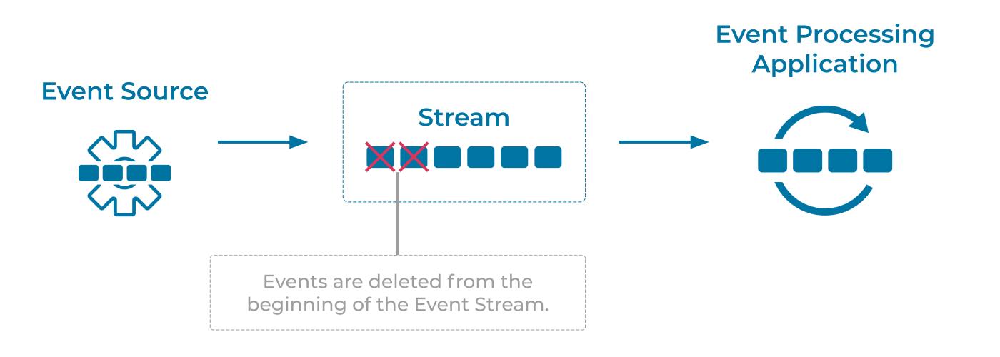

Limited Retention Event Stream
Many use cases allow for Events to be removed from an Event Stream in order to preserve space and prevent the reading of stale data.
Problem
How can we remove events from an Event Stream based on a criteria, such as event age or Event Stream size?
Solution

The solution for limited retention will depend on the Event Streaming Platform. Most platforms will allow for deletion of events using an API or with an automated process configured within the platform itself. Because Event Streams are modeled as immutable event logs in the Event Store, events will be removed from the beginning of an Event Stream moving forward (i.e., oldest events are being removed first). Event Processing Applications that are reading from the stream will not be given the deleted events.
Implementation
Apache Kafka® implements a Limited Retention Event Stream by default. With Kafka, Event Streams are modeled as Topics. Kafka provides two types of retention policy, which can be configured on a per-topic basis or as a default for new topics.
Time-Based Retention
With time-based retention, events will be removed from the topic after the event timestamp indicates an event is older than the configured log retention time. On Kafka this is configured with the log.retention.hours setting, which can be set as a default to apply to all topics or on a per-topic basis. Additionally, Kafka respects a log.retention.minutes and log.retention.ms settings to define shorter retention periods.
The following example sets the retention period of a topic to one year:
log.retention.hours=8760
For more guidance and configuring time-based data retention, see the Kafka Broker Configurations documentation for default settings, or the Modifying Topics section for modifying existing topics.
Size-Based Retention
With size-based retention, events will begin to be removed from the topic once the total size of the topic violates the configured maximum size. Kafka supports a log.retention.bytes configure. For example, to configure the maximum size of a topic to 100GB you could set the configuration as follows:
log.retention.bytes=107374127424
For more guidance and configuring size-based data retention, see the Kafka Broker Configurations documentation for default settings, or the Modifying Topics section for modifying existing topics.
How Events Are Being Removed From an Event Stream
For either method of configuring retention, Kafka does not immediately remove events one by one when they violate the configured retention settings. To understand how they are removed, we first need to explain that Kafka topics are further broken down into topic partitions (see Partitioned Placement). Partitions themselves are further divided into files called segments. Segments represent a sequence of the events in a particular partition, and these segments are what is being removed once a violation of the retention policy has occurred. We can further fine-tune the removal algorithm with additional settings such as log.retention.check.interval.ms and segment configuration, such as log.segment.bytes.
Considerations
- We should account for failure scenarios when configuring event streams with limited retention. Our applications should have enough time to read and process events before they are being removed, which means the configured retention must cover the time frames of potential outages experienced by our applications. For example, if an Operations team has an SLA of 2 business days (Mon to Fri) for a non-mission-critical Kafka use case, then retention should be set to at least 4 days to cover for incidents that happen right before or during the weekends.
- Similarly, if we want to allow applications to reprocess the same events multiple times (often called the ability to reprocess historical data) for use cases such as A/B testing or machine learning, then we must increase the retention settings accordingly. That's why it is common in practice to configure Kafka topics with long retention periods (months or years).
References
- This pattern is similar to Message Expiration in Enterprise Integration Patterns by Gregor Hohpe and Bobby Woolf
- Apache Kafka 101: Introduction provides a primer on "What is Kafka, and how does it work?"
- A related pattern is the Infinite Retention Event Stream pattern which details Event Streams that stores events indefinitely.